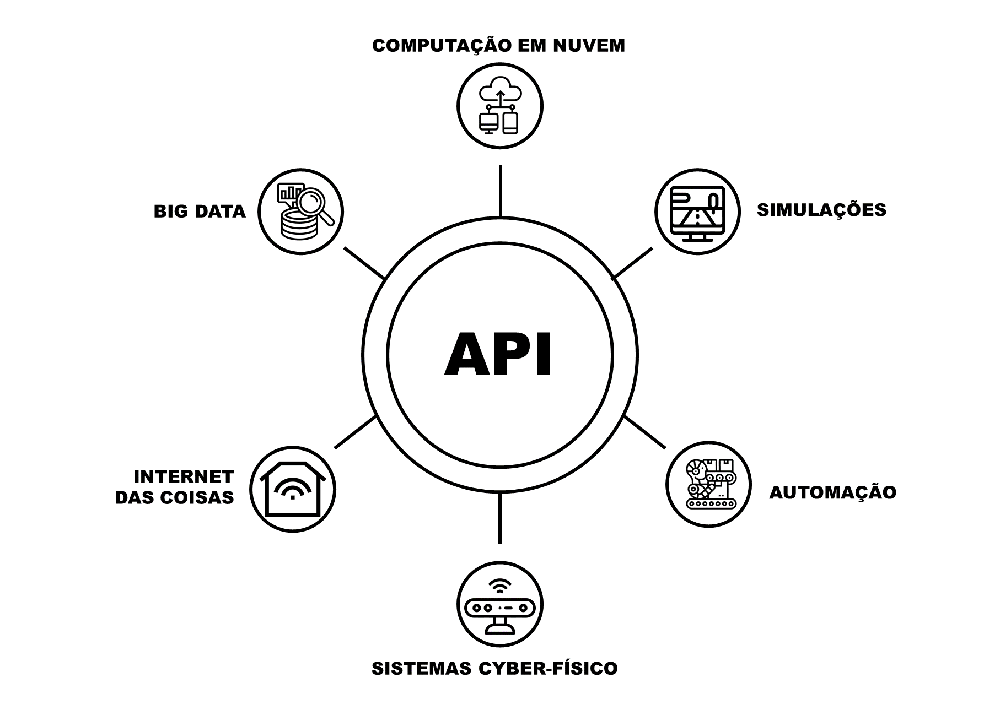

Conhecida como Indústria 4.0,
a quarta revolução industrial teve
seu surgimento na Alemanha e tem como
pilares tecnologias já desenvolvidas,
utilizadas em conjunto, como é o caso da
Internet das Coisas, Computação em Nuvem,
Sistemas Cyber-físicos, Big Data, entre outras.

A utilização dessas tecnologias na indústria, visa
facilitar cada vez mais o trabalho humano, e
principalmente otimizar tempo e recursos.
O presente trabalho visa apresentar um recurso
para indústria 4.0, uma API para gerenciamento
de equipamentos industriais. Por meio dela, será
possível a automação do equipamento.